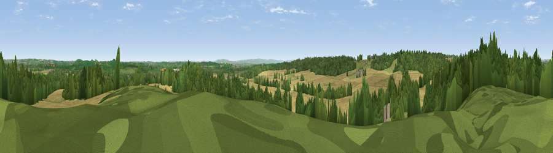

Viewpoint near Coughton
#32075 in England · top 71% of its area beats it · near CoughtonThe view, rendered

A 360° render of this exact spot computed from the terrain model, tree cover and land cover — summer colours, afternoon light, calibrated against photographs of famous viewpoints. Real trees, hedges and buildings will differ in detail.
The panorama
Grey silhouette: terrain skyline in each direction (720 bearings, Earth curvature and refraction included). Dashed green: skyline with trees (+15 m) and buildings (+8 m) as obstacles. Blue strip: how far the ground is visible on each bearing.
Where the view opens
Wedge length = distance to the farthest visible ground on that bearing (vegetation-aware). Rings at 10, 25 and 50 km.
What fills the view
42% cropland · 36% woodland · 21% grassland · 1% built-up
Angular shares of the visible panorama (visual magnitude), not map area. Landscape diversity 0.49 (0–1 Shannon).
Key numbers
More beautiful places nearby
The staircase of upgrades: each row has a higher view potential than everything closer. Driving times are estimates from straight-line distance, calibrated against real road routing — check an actual route before setting out.
| Place | Direction | Drive | Score |
|---|---|---|---|
| Viewpoint near Arrow | S · 5 km | ~11 min | 63.1 |
| Lodge Hill | ENE · 5 km | ~11 min | 64.0 |
| Rous Lench Hill | SW · 8 km | ~16 min | 64.2 |
| Viewpoint near Lenchwick | SSW · 13 km | ~24 min | 66.0 |
| Viewpoint near Cofton Hackett | NNW · 16 km | ~29 min | 66.2 |
| Viewpoint near Meon Vale | SE · 18 km | ~32 min | 77.0 |
| Viewpoint near Elmley Castle | SSW · 22 km | ~37 min | 79.5 |
| Viewpoint near Elmley Castle | SSW · 22 km | ~37 min | 80.5 |
52.23973, -1.90660 · source: screening · position refined by local search. Computed location — check access rights before visiting.